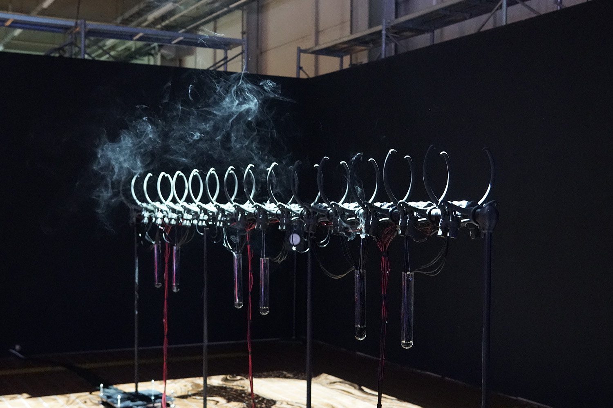

미대밴드 트라이던트 32기 모집 포스터
Poster for a Band, Trident 32th Audition
안녕하세요? 제 이름은 김재연입니다.
Hi, my name is Jaeyeon Kim.
홍익대학교에서 시각디자인을 공부합니다.
Studying visual communication design in Hongik University.
그래픽디자인과 타이포그래피를 익혔어요.
Developed graphic design and typography skills.
미대밴드 트라이던트 32기 모집 포스터
Poster for a Band, Trident 32th Audition
가상행사 포스터, 미디어 루덴스
Virtual Event Poster, Media Ludens
아카이브 아카이브, 그래픽 포스터 연작
Archive Archive Form and Formgiving, graphic poster series
디자인 외에는 무엇을 더 공부해보는게 좋을까?
What else should I learn more besides design?
첨예한 기술구조가 만들어내는 예술과 사람간의 상호작용
Interaction between art and human made with precise technology system
전자드럼의 MIDI 신호를 받아서 달라지는 인터렉티브 그래픽
Interactive graphic triggered by receiving the MIDI signal of the electronic drum
유튜브 튜토리얼들을 따라하며... 터치디자이너를 독학하고... 교육용 라이센스와 립모션을 사고...
Following youtube tutorials, studied touchdesigner and bought educational license and leap motion censor.
코딩소모임 PROTO 활동을 하면서 터치디자이너 워크숍도 진행하고 따로 미디어아트 스터디도 운영했습니다. 당시 열린연단의 강연을 보고 토론도 했었어요.
While working as a PROTO, a coding club in HIVCD, did a touchdesigner workshop and also conducted media art study as well.
하지만 팬데믹으로 인해 모든 전시가 취소 또는 온라인으로 전환되고
However, due to the pandemic, all exhibitions have been canceled or turned online
모든 작업을 웹에서 감상할 수 있게 만들어야 했습니다.
I needed to make all work to be presented on website.
2020년도 코딩 소모임 PROTO 웹 전시
HIVCD coding club, PROTO, web exhibition on 2020
2021년도 소모임 연합 전시, SISO: ZE
HIVCD Club Festival, SISO: ZE, 2021
어쩌다보니 웹을 많이 하게 되어 학과 내외의 여러 웹들을 맡게 되었습니다. 어느덧 외주 작업도 하게 되었고요.
I happened to be in charge of various web projects inside and outside the major. Skills developed as I can get some outsourcing jobs too.
2021년도 시각디자인과 졸업전시 R777
HIVCD graduation week, R777, 2021
2021년도 와우영상제, Breath Create
Breath Create, wow film festival, 2021
홍익시디 소식지, 이메일 뉴스레터 시스템 디자인/코딩/운영
HISIDI Newsletter, email newsletter system
그리고 어렵게 어렵게 인터렉티브 설치 작업도 한번 했습니다.
Hardly got a chance to do a interactive displayed work.
보시다시피 미디어아트, 코드를 사용한 시각 예술에 관심이 많았습니다.
As you see, I had some passionate interest in media art, visual art using code.
하지만, 한 수업에서...
However, in some class...
Okay, Jaeyeon. Do you wanna be a media artist?
Are you rich?
내가 코드를 써서 시각 예술, 디자인에 활용하는걸 미디어 아트라고 하는게 맞나? 나는 작가적인 성향은 아닌 것 같은데...
Is it appropriate to consider my work(using code in visual and design) as Media Art? Am I a Media Artist? I don't think that I'm Artist...
“형태가 생성되는 형성과정을 디자인하다.” – 심규하
“I build programs that allow me to focus on the process of emerging forms, which I call formation.” – Kyuha Shim
“컴퓨테이셔널 디자인은 디자이너가 다양한 결과물들을 생성하기 위해서 일련의 규칙과 매개변수를 통해 컴퓨터 프로그램을 만드는 과정이다.” – 심규하
“Computational Design is the process of building computer programs by designers using algorithms and parameters to generate variations of outcomes.” – Kyuha Shim
Code as Creative Medium – MIT Press, Design by Numbers - John Maeda, Designing Programmes – Karl Gerstner
복잡하고 어려운 웹 기술들에 질리고 방 안에서 혼자 외롭게 머리 싸매며 코딩하는 과정에 손대기 무서운 감정이 무서울 때쯤,
By the time when I got tired of complicated and difficult web technologies, and scared of touching into the process of coding alone in the room,
아는 분의 소개로 알게 된, 민구홍과 민구홍 매뉴팩처링 그리고 새로운 질서 수업
Got to know the existence of Min Guhong과 Min Guhong Manufacturing and New Order
간단하지만 효과적인, 기본과 핵심에 집중한 웹 기술, 그리고 정체불명의 회사. 더 알고 싶어서 수강한 새로운 질서 수업에서 받은 교훈.
Simple but effective, basic and core focused web technology, and an unidentified company. Lessons from the new order class I took to learn more.
콘텐츠의 중요성, 완벽하지 않아도 괜찮은, 웹사이트는 영원한 베타버전이다.
Importance of contents, it's fine to be imperfect, and websites are endless beta-version.
김재연이 인턴으로 근무하는
Jaeyeon Kim is working as intern
과정에서 만난 소중한 인연을 바탕으로 그리드룸이라는 2인 프로젝트 그룹을 결성하고...
Based on the precious relationship I met during the process, formed a duo project group called gridroom...
그리드룸의 웹 공간
web space for gridroom
THHA v1
Test to Tell Humans and Humanlikes Apart
그리고 여전히 공부 중입니다.
And I'm still studying.
2022년 제로원 페스티벌은 어땠나요?
How about the ZER01NEDAY festival 2022?
단연, 가장 좋았던 작품은...
Definitely, my favorite work was...
그 외에도...
Besides...
Stormchaser

기대했던 것에 비해 조금 아쉬웠던
It was a bit disappointing.
“이것도 제로원?” - 같이 간 친구
가장 아쉬웠던건 2022 제로원 공식 웹페이지
The most disappointing thing was the official website of 2022 ZER01neday
그러면 너는?
Then, what about you?
맥락과 연결이 상실된 의미없는 기술 쇼는 지양합니다.
Avoid meaningless technology shows that have lost context and connection.
그저 신기한 것을 한다에 주안점이 가지 않도록 하고 싶습니다.
I don't want to be focused on just doing something complicated.
나는 왜 이걸 할까?
Why am I doing this?
몇가지 생각 중인 것들은...
Few ideas...
AI text to image, text to video, text to 3d, text to audio...
Midjourney, Dall-E, Artbreeder, Make-A-Video by Meta AI, Imagen Video by google, Dream Fusion, Audio Gen by Meta AI...
범람하는 기술 속에서 우리가 할 수 있는 것들, 혹은 앞으로는 어떻게 될까에 대한 탐구
Exploring what we can do in flood of AI technology, or research about what will happen in the future.
기다려왔던 수업인 만큼, 많이 배우고 많이 해보고 싶습니다.
As it is a class that I have been waiting for, I want to learn a lot and try a lot.
들어주셔서 감사해요.
Thank you for listening.